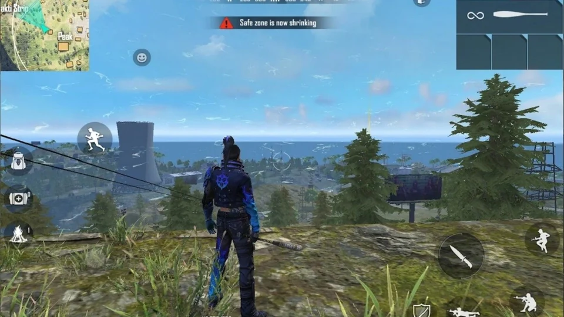
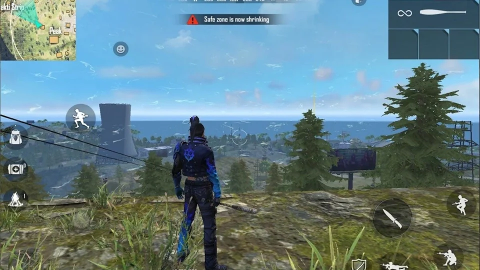

Free Fire
Free Fire is a free to play battle royale game developed and published by Garena
for Android and iOS. It was released on 8 December 2017. It became the most
downloaded mobile game globally in 2019 and has over 1 billion downloads on Google
Play store. In the first quarter of 2021 it was the highest grossing mobile game in
the US. In November 2019, it surpassed $1 billion in lifetime revenue. As of 2021,
Free Fire had surpassed 150 million daily active users.
The game features two main game modes: Battle Royale and Clash Squad. In Battle Royale,
50 players are dropped onto an island and must fight to be the last one standing.
Clash Squad is a team-based mode where two teams of 4 players fight each other in a best-
of-5 match. Free Fire features a variety of weapons, items, and vehicles that players can
use to survive. The game also has a system of playable characters with unique skills
Offical Site>
Game Play:-
 

In Free Fire, players control a character in a third-person perspective and use a joystick
to move. The fire button allows them to shoot and throw items. The character can perform
actions such as jumping, crawling, and lying down. During gameplay, players can utilize
the "Gloo Wall" grenade as a form of cover to protect against damage.
The Battle Royale mode in Free Fire accommodates up to 52 players landing on an island
without weapons. They must fight to be the last one standing by scavenging weapons and
equipment from buildings. Playing this mode in ranked mode will affect their ranking.
There are 6 maps to choose from: Bermuda, Bermuda Remastered, Kalahari, Purgatory, Alpine,
and NeXTerra. The mode allows for solo, duo, or squad play.
Clash Squad
It has a 4-player versus 4-player mode where players purchase weapons and
items from an in-game shop during preparation time, then engage in combat against the
opposing team. The mode is played in a best-of-7 format, lasting anywhere from 4 to 7 rounds.
Each round is won when all players from one team are killed, either by their opponents or
through environmental factors. As of 2022, the maps used in Clash Squad are the same as those
in Battle Royale mode. The mode can be played as either Ranked or Casual.
Lone Wolf
This is a variation of the Clash Squad mode that can be played as either a
1-player versus 1-player or 2-player versus 2-player "duo" format with more intricate rules.
In each round, both sides have the opportunity to select their equipment for the next 2
rounds. The game is played in a best-of-5 format. If both teams have won 4 rounds each,
a final round begins with both sides able to choose any weapon they prefer. All players
are automatically equipped with basic items such as a vest and helmet from the start of
the round. This mode takes place on its own map known as Iron Dome.
Craftland
It allows players to design their own maps in Free Fire using an in-game
builder tool. The maps created can be shared and played with others. Craftland also supports
script editing for advanced customization, giving creators greater freedom to bring their
ideas to life. Players can add buildings, gameplay elements, and decorations to the map
until they reach the maximum space limit. There are two maps available for players to use
as the base for their designs.
Pet System
In Free Fire, pets can provide support to players during fights. As of 2023, the game
features 21 different pets that players can choose to bring into battle. Each pet has
a special ability that sets it apart from the others. Some of these abilities are passive
and trigger automatically, while others are active and require manual activation. One of
the pets in the game, Poring, was added as part of a collaboration with Ragnarok Online.
Players can also customize their pets with skins and emotes.
Ranking System
In Free Fire, a seven-tier ranking system, including sub-tiers like
Bronze I, II, III, categorizes players by skill and performance. Players earn ranking points
based on kills, damage, survival time and standing position, progressing from Bronze to
Grandmaster. Seasons reset ranks (e.g., from Silver III to Bronze I or II). There are two
ranked modes: Battle Royale rank mode and Clash Squad rank mode.